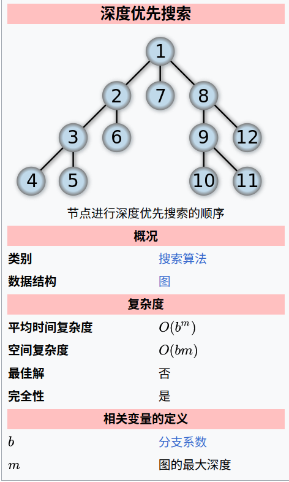
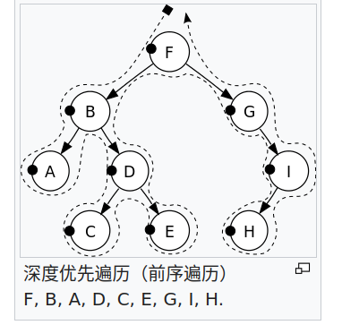
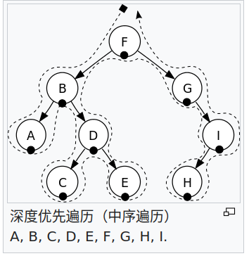
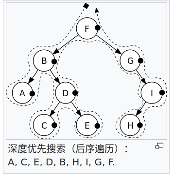
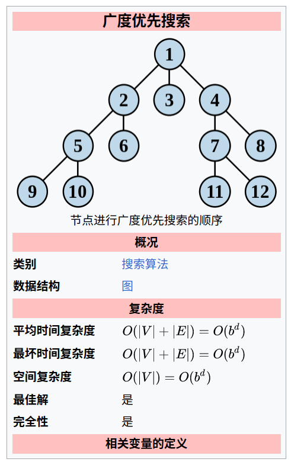
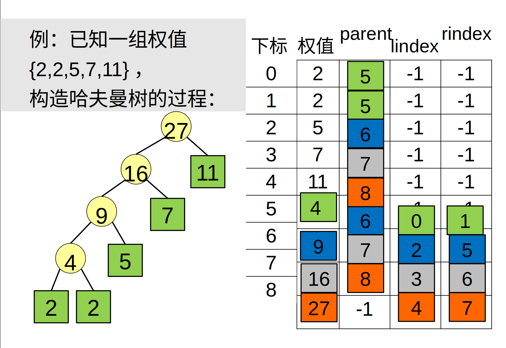
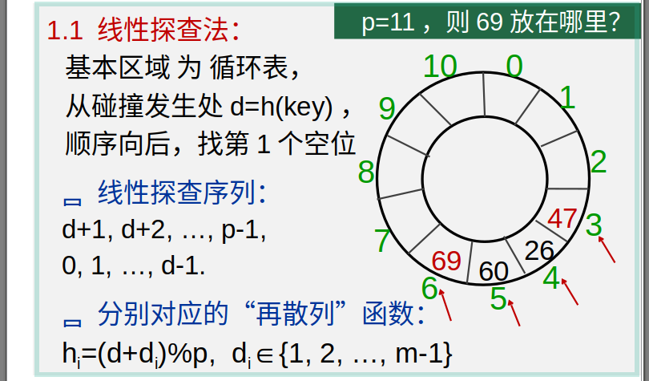
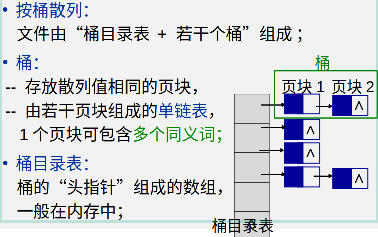
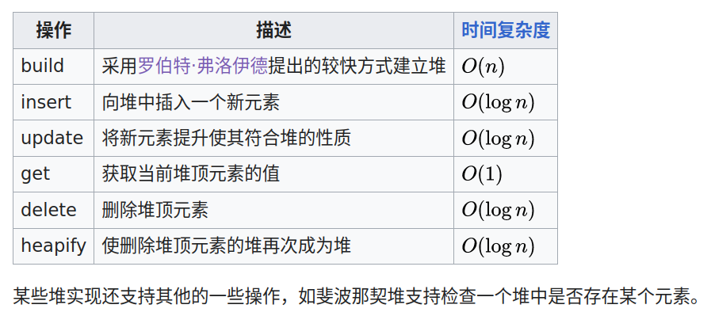
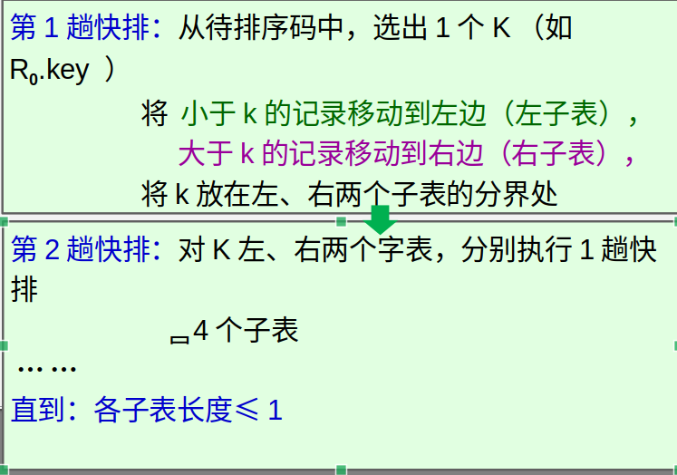

树、图与算法¶
前置概念
树型结构：唯一前驱，后继可以不唯一
集合：不存在前驱、后继的关系
线性结构：唯一前驱，唯一后继
图结构：前驱、后继均可不唯一
结点的度：一个结点的分枝个数
层、 深度
二叉树¶
- 二叉树（Binary tree）：是每个节点最多只有两个分支（即不存在分支度大于2的节点）的树结构。
通常分支被称作“左子树”或“右子树”。二叉树的分支具有左右次序，不能随意颠倒。
二叉树第i层至多拥有 \(2^{i-1}\);深度为k的二叉树至多共有 \(2^{k+1} - 1\) 个节点。
对任意一棵非空的二叉树，如果其叶片数为 \(n_0\) ，分支度为 2 的节点数为 \(n_2\) ，则 \(n_0 = n_2 + 1\)
满二叉树：拥有最大节点树的二叉树
- 完全二叉树：在一颗二叉树中，若除最后一层外的其余层都是满的，并且最后一层要么是满的，要么在右边缺少连续若干节点，则此二叉树为完全二叉树（Complete Binary Tree）。
完全二叉树可以通过在末尾增加结点转换为满二叉树。具有n个节点的完全二叉树的深度为 \([log_2n] + 1\)
平衡树: 平衡树是计算机科学中的一类数据结构，为改进的二叉查找树。 一般的二叉查找树的查询复杂度取决于目标结点到树根的距离（即深度），因此当结点的深度普遍较大时，查询的均摊复杂度会上升[1]。 为了实现更高效的查询，产生了平衡树。在这里，平衡指所有叶子的深度趋于平衡，更广义的是指在树上所有可能查找的均摊复杂度偏低。
二叉树的周游（遍历）¶
深度优先搜索
{kind=link}
深度优先搜索算法（Depth-First-Search，缩写为DFS）是一种用于遍历或搜索树或图的算法。 这个算法会尽可能深地搜索树的分支。当节点v的所在边都己被探寻过，搜索将回溯到发现节点v的那条边的起始节点。 这一过程一直进行到已发现从源节点可达的所有节点为止。如果还存在未被发现的节点， 则选择其中一个作为源节点并重复以上过程，整个进程反复进行直到所有节点都被访问为止。 这种算法不会根据图的结构等信息调整执行策略。
深度优先遍历分为：
前序遍历(pre_order_traversal)
中序遍历(in_order_traversal)
后序遍历(post_order_traversal)
先序遍历
先序遍历先抛出自己，再进行下一步搜索
1# 深度优先搜索:by self
2# 先序遍历
3def iter_pre_order(root):
4 yield root
5 if root.left is not None:
6 yield from dfs(root.left)
7 if root.right is not None:
8 yield from dfs(root.right)
9# 中序遍历
10def iter_in_order(root):
11 if root.left is not None:
12 yield from dfs(root.left)
13 yield root
14 if root.right is not None:
15 yield from dfs(root.right)
16# 后序遍历
17def iter_post_order(root):
18 if root.left is not None:
19 yield from dfs(root.left)
20 if root.right is not None:
21 yield from dfs(root.right)
22 yield root
|  |  |  |
广度优先遍历
{kind=link}
广度优先搜索算法（英语：Breadth-first search，缩写：BFS）， 又译作宽度优先搜索，或横向优先搜索，是一种图形搜索算法。 简单的说，BFS是从根节点开始，沿着树的宽度遍历树的节点。 如果所有节点均被访问，则算法中止。广度优先搜索的实现一般采用open-closed表。
广度优先遍历的实现
利用“先进先出”的队列和循环可以实现广度优先遍历。
1from collections import deque
2
3def iter_bfs(root):
4 d = deque(root) # 根加入队列
5 while d : # 队列为空则表明遍历结束
6 d_new = deque()
7 while d:
8 r = d.pop()
9 yield r
10 if r.left is not None:
11 d_new.appendleft(r.left)
12 if r.right is not None:
13 d_new.appendleft(r.right)
14 d = d_new
用广度优先遍历判断一棵树是否为完全二叉树
flag=0，
第1次遇到leftChild或rightChild为空，置flag=1，
继续，若后续结点有孩子非空，且flag为1，则不是完全二叉树；
非递归深度优先遍历的实现
非递归深度优先遍历可以利用先进后出的栈和循环实现。
增加路径视为入栈，返回值视为出栈
先序遍历是入栈后立即出栈，通过将右子结点先入栈来实现 先出栈左结点的功能
中序遍历是出栈在左结点之后右结点之前，所以先沿着左结点入栈，然后出栈，如果有右结点再沿着左结点入栈，然后出栈，直至栈空。
后序遍历是出栈在左右结点都入栈之后，所以先入栈右左结点，然后出栈，如果还有左右结点则继续入栈右左结点，直至栈空。
1def iter_pre_order(root):
2 stack = [root] #将根置入栈
3 while stack : # 栈空时结束
4 r = stack.pop() # 出栈
5 yield r
6 if r.right:
7 stack.append(r.right) # 入栈
8 if r.left:
9 stack.append(r.left) # 入栈
10
11def iter_in_order(root):
12 stack = [] # 分为两个循环，入栈循环和出栈循环，出栈循环在外。
13 p = root
14 # 第一次入栈循环
15 while p:
16 stack.append(p)
17 p = p.left
18 # 出栈循环
19 while stack:
20 p = stack.pop()
21 yield p
22 if p.right:
23 p = p.right
24 # 入栈循环
25 while p:
26 stack.append(p)
27 p = p.left
28
29def iter_post_order(root):
30 stack = []
31 p = root
32 # 入栈循环
33 while p :
34 if p.right:
35 stack.append(p)
36 if p.left:
37 stack.append(p)
38 p = p.left
39 # 出栈循环
40 while stack:
41 p = stack.pop()
42 if p.right:
43 stack.append(p)
44 p = p.right
45 # 入栈循环
46 while p :
47 if p.right:
48 stack.append(p)
49 if p.left:
50 stack.append(p)
51 p = p.left
52 yield p
完全二叉树的顺序表示¶
完全二叉树可以按‘广度优先遍历’的顺序，进行顺序存储：
如果用 \(T_{层数，一层从左至右的个数} = T_{i,j}\) 来表示一个元素。则第n个元素为。
二叉树的应用¶
哈夫曼树与哈夫曼编码(Huffman)¶
概念
权值(w) ： 给二叉树的每个结点赋予一个权值（正数），就成了带权二叉树
树的路径长度(WPL) ：根结点到每个结点的路径长度只和，根到任意一个结点的路径长度为，层数乘结点权数。
哈夫曼树: 在一个权值序列下，使路径长度最小的二叉树称为哈夫曼树，又叫最优二叉树
哈夫曼树的构造¶

哈夫曼树的储存¶
m个叶结点的哈夫曼树共2m-1个结点，使用顺序结构储存，前m个为叶结点。
结点储存信息：自身信息，父索引，右子索引，左子索引
树的遍历¶
树的度：树中结点度的最大值；
兄弟：有共同的父结点；
无序树：兄弟间无左右次序；
有序树：兄弟分左右；
长子：最左子结点；
次子：长子的右邻；
左、右兄弟
树的遍历
参考二叉树的遍历，想想树的遍历如何实现，注：树没有中序遍历。
树的顺序储存
思考树如何借助遍历的顺序，实现顺序储存，结点需要哪些保存哪些信息。
树如何转换为二叉树
字典的存储之散列表示¶
希望得到一个函数满足 \(h(key) = addr\)，从而可以根据字典的值得到存储的地址。这样的函数叫散列函数或hash函数。
散列函数设计的基本问题
如何求散列函数
由于key的数目一般远大于地址的数目，发生 \(h(key1) = h(key2)\) 即碰撞时如何解决。
负载因子 : \(\alpha = \frac{key的数目}{地址空间基本容量}\)
除余法¶
碰撞处理方式1-线性探查法再散列¶
由于线性探查法使非同义词可能占据同一空间，从而会发生堆积问题(非同义词发生冲突)。
碰撞处理方式2-拉链法¶

散列文件¶
将散列表(拉链法解决碰撞)用于文件的存储。
成倍扩充桶的好处 ： 减少访问次数。
二叉查找树¶
二叉查找树（英语：Binary Search Tree），也称为二叉搜索树、有序二叉树（ordered binary tree）或 排序二叉树（sorted binary tree），是指一棵空树或者具有下列性质的二叉树：
若任意节点的左子树不空，则左子树上所有节点的值均小于它的根节点的值；
若任意节点的右子树不空，则右子树上所有节点的值均大于它的根节点的值；
任意节点的左、右子树也分别为二叉查找树；
二叉查找树的重要性质 ： 通过中序查找可以返回一个顺序序列
二叉查找树的查找算法和插入，删除¶
通过二叉查找树的大小分布的性质来查找。
平衡二叉排序树(AVL)¶
为了尽可能使平均检索长度(ASL)比较短，从而提出平衡二叉排序树。
平衡二叉排序树 : 每个结点的左、右子树高度之差的绝对值不超过1的二叉排序树。
待续
插入排序¶
插入排序的原理是通过构建有序序列，对未排序的数据，在已排序序列中从后向前扫描，找到相应的位置插入。 插入排序在实现上，通常采用in-palce排序（占用空间O(1)），即从后向前扫描。
in-palce排序
从第一个元素开始，该元素可以认为已经被排序
取出下一个元素，在已经排序的元素序列中从后向前扫描
如果该元素（已排序）大于新元素，将该元素移到下一位置
重复步骤3，直到找到已排序的元素小于或者等于新元素的位置
将新元素插入到该位置后
重复步骤2~5
二分插入排序
将上面的2-5步改为使用二分法查找位置
希尔排序 希尔排序（Shellsort），也称递减增量排序算法，是插入排序的一种更高效的改进版本。 希尔排序是非稳定排序算法。
希尔排序建立在这样的思想下：
插入排序每次只移动一部，效率低下，可以改变其步长
使用步长减小的序列，只要步长最后为1，排序就一定成功
选择合适的步长序列影响着算法的收敛速度
因而希尔排序只是使用减小为1的步长序列来改善直接插入算法的方法。
已知的最好步长序列是由Sedgewick提出的(1, 5, 19, 41, 109,…)，该序列的项，从第0项开始， 偶数来自 \(9 \times 4^i - 9 \times 2^i + 1\) 和 奇数来自 \(2^{i + 2} \times ( 2^{i + 2} - 3 ) + 1\) 这两个算式。 这项研究也表明“比较在希尔排序中是最主要的操作，而不是交换。” 用这样步长序列的希尔排序比插入排序要快，甚至在小数组中比快速排序和堆排序还快， 但是在涉及大量数据时希尔排序还是比快速排序慢。
选择排序¶
选择排序与插入排序不同，是在未排序的序列中寻找最大或最小值，然后加到已排序序列中的算法。
简单选择排序¶
简单的选择排序就是将未排序序列中的最小值（最大值）依次加到已排序序列中，但未排序序列为空时停止。
堆排序¶
堆：满足堆序性的完全二叉树，堆序性是指，结点的值满足子结点恒大于或等于母结点（或恒小于等于）。
基于堆的性质，可以依次去除堆根结点完成排序，所指定的排序为堆排序。
堆的存储方式和完全二叉树相同，可以采用顺序储存。
堆支持的基本操作
build
建立堆有两种方法，一是不断插入新的元素，二是将待排序记录建成一个完全二叉树（存入序列），然后从后向前依次调整。
方法1的时间复杂度 \(\Sigma_1^n log(i) =O(log(n!))\),方法2的从后向前指的是序列顺序，时间复杂度为 \(O(n)\)。
在其他算法中，充分利用大小的性质，可以得到较快速简洁的算法。
交换排序和基数排序¶
交换排序是以比较然后交换操作为基础的排序。
冒泡排序¶
冒泡排序是对未排序序列 [0:n] 相邻的元素两两比较（共 n-1次），将大的置后，从而使最后一个元素完成排序，重复直至未排序序列只有一个元素，完成排序的算法。
冒泡排序开销较大，效率较低。
快速排序¶
快速排序是冒泡排序的改进版本。由于冒泡排序每次只进行相邻元素的比较交换，效率低下。 快速排序则一次性确定一个排序好的元素。
基数排序¶
将排序分解为若干个部分分别排序的方法，叫分配排序方法。
常见的分配排序为基数排序，用于排序整数。
基数排序是指按个位、十位、百位… 依次排序的方法。
图¶
相关概念
完全图：任意两个顶点之间，都有1条边
稀疏图：N个顶点，很少条边(弧)
稠密图：N个顶点，很多条边(弧)
(顶点间)邻接、(顶点与边)关联
顶点的度D(V): * 有向图中，入度为以V为终点的边数，出度 = 以V为起点的边数，度 = 入度 + 出度 * 无相图中，以顶点V相关联的边数。
路径，以顶点序列来表示一个路径
路径长度，该路径的边数
回路：起点与终点相同
简单路径：只有起点和终点可以相同，即内部无回路 l
简单回路：回路 + 简单路径
有根图：在一个有向图中存在一个可以到达所有结点的顶点V，则称该图为有根图，该顶点为有根图的一个根。
子图：图的子集
连通：顶点之间至少存在一条路径则称顶点连通。
连通图：图中任意两个顶点都连通
连通分量：分量量（英语：Component）又称为连通分量、元件、或分支， 是一个无向子图，在分量中的任何两个顶点都连通，且没有任何一边可以连到其他子图的顶点。
强连通图：双向连通图
带权图：给边赋予权值
带权路径长度：路径上权值之和
网络：带权的连通图
图的储存结构¶
顶点表+邻接矩阵
顶点表+（出或入）边表（n个单链表）
{kind=link}
{kind=link}
{kind=link}
{kind=link}